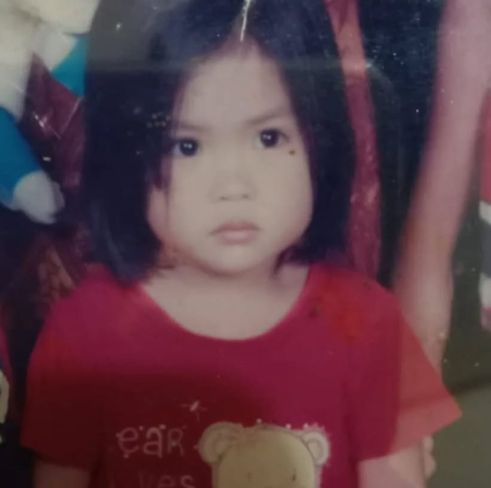
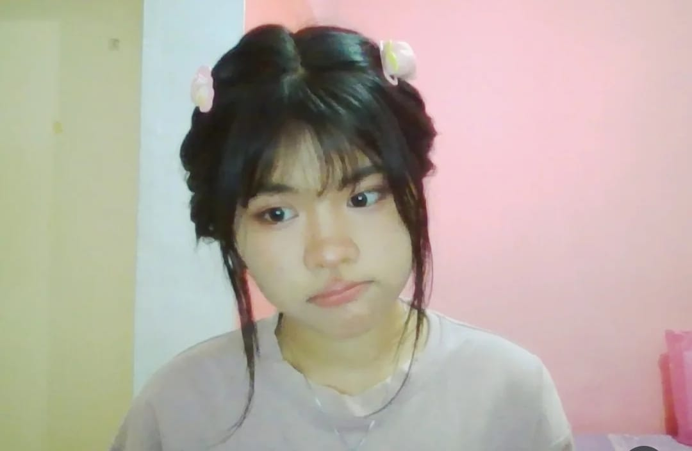
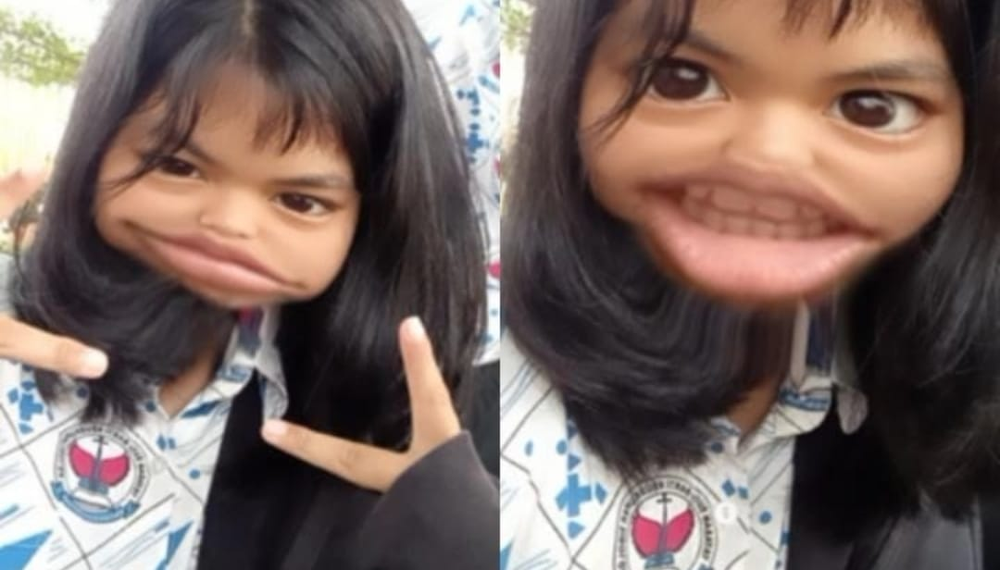
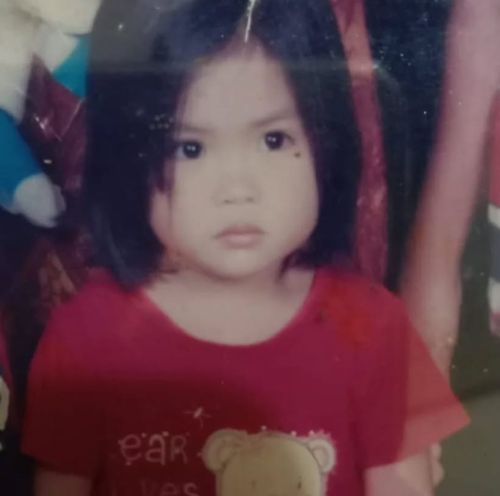
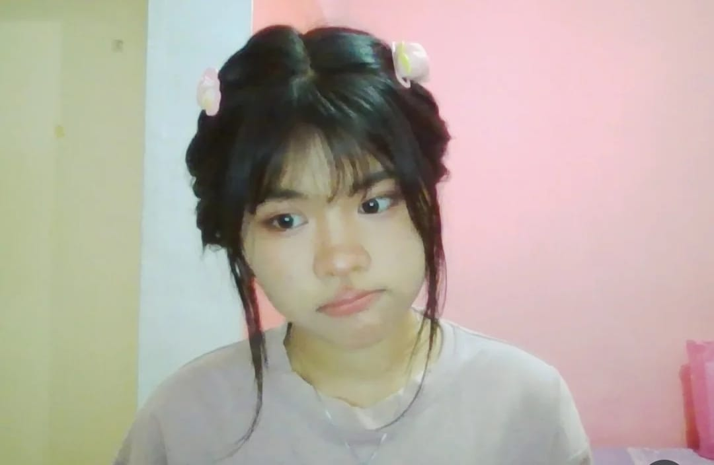
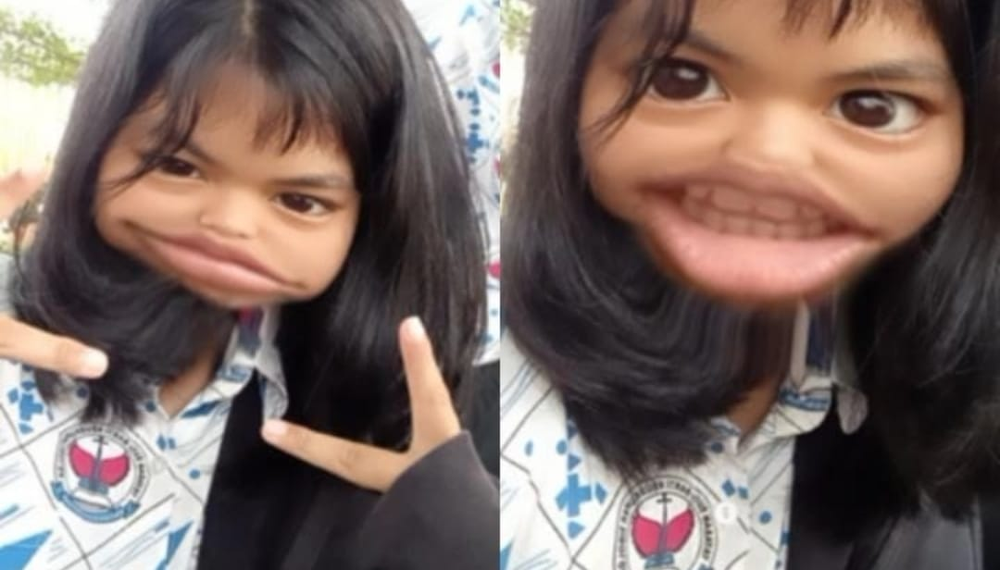

happy birthday pookie ✨
 





dear my sweetie pookie potatie honie
happy bday my one and only pretty(ex)gf!
hi sayang! i actually dont know what to type here, cz gwej bukan romantic person
yh dan luhk tw itu wkwkw. but all i want to say here is, happy 19th bday lil gul! ofc ure getting
older too awoakwoakwok bau tanah.g
semoga sehat sehat yh di sana, stay in a healthy relationship baik itu pcr luhk, atw temen kamuh,
hrus jaga diri baik baik ya di medan (plz jgn maling besi disana, km jgn malu maluin pasid),
semangat kulyeah nya, ak usahin dateng pas wis-udah kamu (nnti ak ngebegal halal buat dapetin
duitnya), jangan sampe kena cacingan, jangan lupa minum air putih, jangan lupa makan, jangan lupa
klo kita pernah semesra itu (ts actually not necessary) dan langgeng yh sama CWK mu itu. kalo dia
macem macem, kasih paham, bukan kasih maaf. tapi kalo kamu yg macem macem, yh gapapa sih kan km ga
pernah salah di mata ak.
hmz, apalagi yh. gtw mau ngetik apalagi. ohiya klo km penasaran sama kabarku, yeah ak bike bike
ajasi disini, masih waras waras aja mwehehekeheh. ak gtw kpn kita bisa ketemu lagi, tapi semoga
tahun depan kita ketemu setidaknya sekali huehuehue. itu aja yh, aku gabisa bikin kata kata plz, i
cant even make any gahdeymn romantic word, eak eak. maaf yh klo ak bukan mantan yg bike disaat saat
dulu, skrg uda jadi anak bike kok wok (dikit).
SEKALI LAGI HAPPY BDAY YA SAYANG! and u should know that ily that much, so fuccjking much
much.
(Dari ex cwk mu yg paling ketjeh sedunia)